Case study
Boosting the Packaging Process for India’s leading Biotech Brand.
As the world got affected by Covid19, the need for covid testing arose
enormously across the globe. Considering the fact that the RTPCR tests gave the results in
couple of days, there started the development of Rapid Antigen (RAT) Covid testing kits.
A rapid antigen test is a quick home test to check if you may have COVID-19 and provides
a result within 15 to 30 minutes with good accuracy.
As the demand for the RATs was huge, the production also had to be up to the mark.
We augmented the packaging line process for an India’s leading Biotech Brand which eventually
resulted in boosting their production metrics and catering to the needs of the market more efficiently.
 
